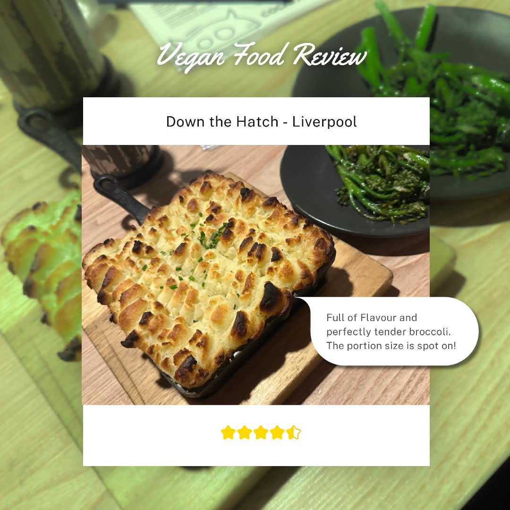
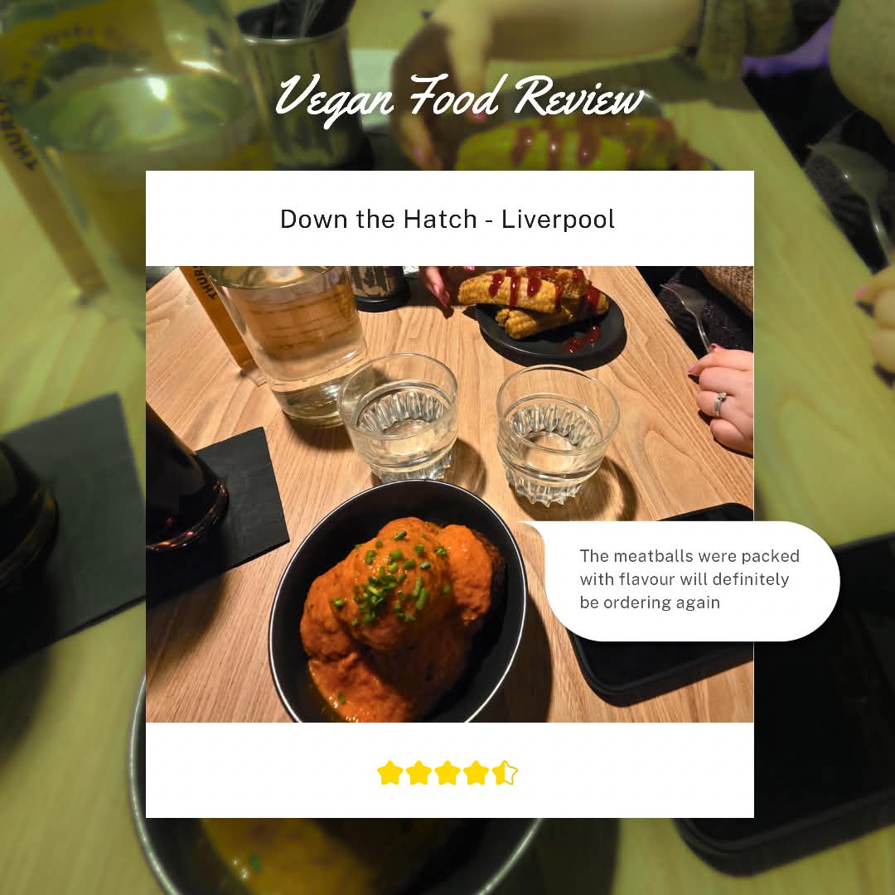

Down the Hatch is a brilliant fully vegan restaurant located just minutes from Liverpool’s city centre. The entrance is a bit of a hidden gem, tucked down a small flight of steps, but what waits inside is well worth finding. The cosy basement interior instantly makes you feel welcome, and our initial service was remarkably quick.
For first-time diners, navigating the menu can be slightly confusing due to the mix of small-plate deals and "build-your-own" options—don’t hesitate to ask the staff for guidance. Soft drinks are on a refill system; however, refills need to be requested via the floor staff. Because the venue gets packed, our second round was forgotten. Since it was a complimentary refill we didn't chase it up, but the staff are very approachable if you need to give them a gentle reminder.
Tip: Booking ahead is an absolute must. It gets extremely busy, and we saw several walk-ins turned away at the door.

